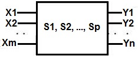
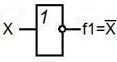
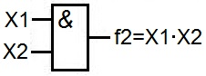
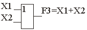
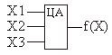
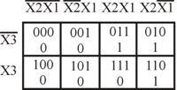
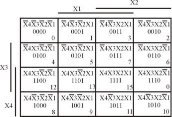
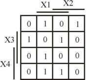

Логические основы проектирования цифровых устройств
Задачи, решаемые при разработке цифровых логических устройств, можно разделить на две категории:
- Синтез - это процесс построения схемы цифрового устройства по заданию.
- Анализ - процесс обратный синтезу.
Модель дискретного устройства, отражающая только его свойства по переработке сигналов, называется дискретным (цифровым) автоматом.

Рис. 1 - Схема представления цифрового автомата в виде многополюсника
X=(X1, X2, ..., Xm) - входные сигналы
Y=(Y1, Y2, ..., Yn) - выходные сигналы
S=(S1, S2, ..., Sp) - состояние внутренних элементов памяти автомата
В общем случае, модель представляет собой многополюсный черный ящик с m входами и n выходами (рис. 1). Состояние автомата определяется состояниями сигналов на его входах и выходах. Совокупность входных и выходных переменных Х и Y образуют входное и выходное слово автомата, соответственно.
Различные значения входных переменных образуют алфавит (т.к. алфавит входных и выходных переменных един, в дальнейшем будет рассматриваться только один алфавит). В цифровой технике алфавит входного (выходного) слова содержит два значения (две буквы) "1" и "0".
Каждое слово - набор переменных на входе или на выходе автомата, отличается от другого слова хотя бы одной буквой. Каждая буква слова поставлена в соответствие с номером входа (выхода) автомата.
Основы алгебры логики
Алгебра логики (АЛ) является основным инструментом синтеза и анализа дискретных автоматов всех уровней. Алгебру логики называют также "Булевой алгеброй". Алгебра логики базируется на трёх функциях, определяющих три основные логические операции.
1. Функция отрицания (НЕ). f1 =X читается, как "f1 есть (эквивалентна) НЕ Х". Элемент, реализующий функцию НЕ, называется элементом НЕ или инвертором.

Рис. 2 - Условное графическое обозначение элемента НЕ
Элемент НЕ имеет два состояния.
Таблица 1
| X | f1 |
|---|---|
| 1 | 0 |
| 0 | 1 |
2. Функция логического умножения (конъюнкции). Функция логического умножения записывается в виде f2=X1·X2. Символы логического умножения: &,^, •.
Функция конъюнкции читается так: "f2 есть (эквивалентна) Х1 и Х2, поскольку функция истинна тогда, когда истинны 1-й и 2-й аргументы (переменные)". Конъюнкцию называют функцией И, элемент, реализующий эту функцию, элементом И.

Рис. 3 - Условное графическое обозначение элемента И
Таблица 2
| X1 | X2 | f2 |
|---|---|---|
| 0 | 0 | 0 |
| 1 | 0 | 0 |
| 0 | 1 | 0 |
| 1 | 1 | 1 |
В общем случае функцию логического умножения от n переменных записывают так:
Количество переменных (аргументов), участвующих в одной конъюнкции, соответствует количеству входов элемента И.
3. Логическое сложение (дизъюнкция). Функция логического сложения записывается в виде f3=X1 + X2, и читается так: "f3 есть Х1 или Х2, поскольку функция истинна, когда истинна одна или другая переменная (хотя бы одна)". Поэтому функцию дизъюнкции часто называют функцией ИЛИ. Символы логического сложения: +,V.

Рис. 4 - Условное графическое обозначение элемента ИЛИ
Таблица 3
| X1 | X2 | f2 |
|---|---|---|
| 0 | 0 | 0 |
| 1 | 0 | 1 |
| 0 | 1 | 1 |
| 1 | 1 | 1 |
Используя операции (функции) И, ИЛИ, НЕ можно описать поведение любого комбинационного устройства, задав сколь угодно сложное булево выражение. Любое булево выражение состоит из булевых констант и переменных, связанных операциями И, ИЛИ, НЕ.
Пример булева выражения: f(X1,X2) = X1 +X1· X2+(X1+X2)·X1.
Элементарные функции алгебры логики
Среди всех функций алгебры логики особое место занимают функции одной и двух переменных, называемые элементарными. В качестве логических операций над переменными, эти функции позволяют реализовать различные функции от любого числа переменных.
Общее количество функций алгебры логики от m переменных R=2k, где k=2m.
Таблица 4
| Переменные и их состояния | Обозначение функции |
Назначение функции | ||||
|---|---|---|---|---|---|---|
| X1 | 0 | 0 | 1 | 1 | ||
| X2 | 0 | 1 | 0 | 1 | ||
| f0 | 0 | 0 | 0 | 0 | f0=0 | Генератор 0 |
| f1 | 0 | 0 | 0 | 1 | f1=X1·X2 | «И» |
| f2 | 0 | 0 | 1 | 0 | f2=X1·X2 | |
| f3 | 0 | 0 | 1 | 1 | f3=X1 | |
| f4 | 0 | 1 | 0 | 0 | f4=X1·X2 | |
| f5 | 0 | 1 | 0 | 1 | f5=X2 | |
| f6 | 0 | 1 | 1 | 0 | f6=X1⊕X2 | Сумматор по модулю два |
| f7 | 0 | 1 | 1 | 1 | f7=X1+X2 | «ИЛИ» |
| f8 | 1 | 0 | 0 | 0 | f8=X1+X2 | «ИЛИ-НЕ» |
| f9 | 1 | 0 | 0 | 1 | f9=X1~X2 | Функция равнозначности |
| f10 | 1 | 0 | 1 | 0 | f10=X2 | «НЕ» Х2 |
| f11 | 1 | 0 | 1 | 1 | f11=X1+X2 | |
| f12 | 1 | 1 | 0 | 0 | f12=X1 | «НЕ» Х1 |
| f13 | 1 | 1 | 0 | 1 | f13=X1+X2 | |
| f14 | 1 | 1 | 1 | 0 | f14=X1·X2 | «И-НЕ» |
| f15 | 1 | 1 | 1 | 1 | f15=1 | Генератор 1 |
Основные законы алгебры логики.
Основные законы АЛ позволяют проводить эквивалентные преобразования функций, записанных с помощью операций И, ИЛИ, НЕ, приводить их к удобному для дальнейшего использования виду и упрощать запись.
Таблица 5
| N | а | б | Примечание |
|---|---|---|---|
| 1 | 0=1 | 1=0 | Аксиомы (тождества) |
| 2 | X+0=X | X*1=X | |
| 3 | X+1=1 | X*0=0 | |
| 4 | X+X=X | X*X=X | |
| 5 | X+X =1 | X*X=0 | |
| 6 | X=X | Закон двойного отрицания | |
| 7 | X+Y=Y+X | X*Y=Y*X | Закон коммутативности |
| 8 | X+X*Y=X | X[X+Y]X | Закон поглощения |
| 9 | [X+Y]=X*Y | [X*Y]=X+Y | Правило де-Моргана (закон дуальности) |
| 10 | [X+Y]+Z=X+Y+Z | [X*Y]Z=XZ+YZ | Закон ассоциативности |
| 11 | X+Y*Z=[X+Y][X+Z] | X[Y+Z]=XY+XZ | Закон дистрибутивности |
Булевой алгебре свойственен принцип двойственности, что наглядно иллюстрирован в табл. 5. Как следует из табл. 5, только закон двойного отрицания не подчиняется этому принципу.
Используя законы алгебры логики, можно упростить булевы выражения, в частности, правило склеивания позволяет упростить выражение типа
X1X2+X1X2
Действительно, используя законы 2, 5 и 11 можно записать исходное выражение в виде Х2(Х1 +Х1 ) =Х2. Так как логическая операция Х1 +Х1 = 1 (см. закон 5), а Х2×1 = Х2 (см. закон 2б), полученное выражение истинно.
Способы задания функций алгебры логики.
При сопоставлении функций АЛ с дискретными автоматами аргументы функций, сопоставляются с входами, а сами функции с выходами дискретного автомата.
Поскольку дискретный автомат имеет конечное число входов, то мы будем иметь дело с функцией конечного числа аргументов. Если автомат имеет m входов, то количество входных переменных тоже m и число возможных комбинаций наборов значений этих входных аргументов (переменных) К=2m.
Поскольку автомат имеет конечное число входов, его состояние описывается конечным числом значений функций выходов. Существует несколько способов задания функций алгебры логики дискретного автомата.
Табличный способ
При этом способе функция задается в виде таблицы истинности, представляющей собой совокупность всех наборов переменных и соответствующих им значений функции.
Таблица 6
| N | X3 | X2 | X1 | F(X1,X2,X3) |
|---|---|---|---|---|
| 0 | 0 | 0 | 0 | 0 |
| 1 | 0 | 0 | 1 | 1 |
| 2 | 0 | 1 | 0 | 1 |
| 3 | 0 | 1 | 1 | 0 |
| 4 | 1 | 0 | 0 | 0 |
| 5 | 1 | 0 | 1 | 1 |
| 6 | 1 | 1 | 0 | 0 |
| 7 | 1 | 1 | 1 | 0 |
Таблица истинности содержит 2m строк, m столбцов (по количеству входов) и один столбец для записи значения функции.
Например: пусть требуется задать функцию трех переменных F1(Х1,Х2,Х3) (рис. 5), т.е. автомат на три входа и на один выход, следовательно, M=3, К=8.

Рис. 5 - Функциональное обозначение цифрового автомата трех переменных
Числовой способ
В этом случае функция задается в виде десятичных эквивалентов номеров наборов аргументов, при которых функция принимает единичное значение. Например, для рассмотренного выше примера функция F принимает единичные значения на наборах переменных со следующими номерами: 1, 2, 5, тогда числовой способ задания будет иметь вид
F(X1,X2,X3)=(1,2,5)X3,X2,X1
Координатный способ
При этом способе дискретный автомат задается с помощью карты его состояния, которая известна как карта Карно.
Карта Карно содержит 2m клеток по числу наборов значений переменных. Каждая клетка определяется координатами строк и столбцов, соответствующими определенному набору переменных. Все входные переменные разбиваются на 2 группы так, что одна группа определяет координаты строк, а другая - координаты столбцов. В каждой клетке карты Карно проставляется соответствующее значение функции на заданном наборе. Пример задания функции трех переменных приведен на рис. 6. Числовое выражение этой функции выглядит так:

Рис. 6 - Карта Карно функции трех переменных
F(X)=(2,3,6)X3,X2,X1; K=2m; m=3; K=8
Пример построения карты Карно для функции 4-х переменных. Пусть функция задана в числовой форме и имеет вид:
F(X)=(1,2,4,7,9,11,13)X4,X3,X2,X1;
Следовательно, К=16, m=4.
Сначала проводим разметку координат карты Карно без указания значений функции. Для удобства воспользуемся указанием "шапки" в виде прямых линий, “под” которыми переменные входят в значение координат без отрицания (рис.7). Таким образом, по столбцам и по строкам переменные входят без отрицания в пределах линии-шапки.

Рис. 7 - Карта Карно функции четырех переменных
Для наглядности координаты клеток карты Карно указаны в трех формах:
- в виде наборов переменных;
- в виде двоичного числа, соответствующего порядковому номеру набора переменных;
- в десятичном эквиваленте номеров наборов переменных.
На практике координаты внутри клеток не записывают (рис. 8), в клетках указываются единичные значения функции, соответствующие “координатным” наборам переменных. Нулевые значения функции в клетки можно не записывать, т.е. клетки, координаты которых определяются наборами переменных с нулевыми значениями функции, можно оставить пустыми.

Рис. 8 - Карта Карно функции четырех переменных с указанием внешних разметок
Следует отметить, что перестановка местами переменных Х1 и Х2, а так же переменных Х3 и Х4 допускается, допускается также перестановка местами переменных Х1Х2 и Х4Х3. При построении карты Карно, т.е. при задании логической функции, указывают лишь внешние элементы разметки координат (рис. 8).
Аналитический способ задания функции алгебры логики
При этом способе функция задается в виде аналитического выражения, полученного путем применения каких-либо логических операций.
Например:
F(X) = X1Х2X3 + (X1 + X2)(Х2 + Х3)
Совершенная нормальная дизъюнктивная форма (СНДФ)
По таблице истинности можно составить логическое выражение, содержащее наборы переменных, в которые входят все переменные с отрицанием или без. Одна из его форм называется СНДФ.
В качестве примера получения СНДФ рассмотрим случай задания логической функции в виде таблицы истинности. Пусть задана функция трех переменных. Таблица истинности этой функции показана в табл. 7.
Таблица 7
| N | X3 | X2 | X1 | F(X) |
|---|---|---|---|---|
| 0 | 0 | 0 | 0 | 0 |
| 1 | 0 | 0 | 1 | 0 |
| 2 | 0 | 1 | 0 | 1 |
| 3 | 0 | 1 | 1 | 0 |
| 4 | 1 | 0 | 0 | 1 |
| 5 | 1 | 0 | 1 | 1 |
| 6 | 1 | 1 | 0 | 0 |
| 7 | 1 | 1 | 1 | 0 |
Из таблицы истинности видно, что функция принимает значение логической единицы только на трех наборах переменных, т.е. на 2, 4 и 5-м наборах. Для второй строки (второго набора переменных) можно записать: Х1=0, Х2=1, Х3=0, следовательно, функция f(0,1,0)=1. Принято (по умолчанию) считать, что если переменная в "нормальном" состоянии имеет значение логической единицы, а в инверсном - логического нуля, тогда функцию для второй строки можно представить в виде X1Х2X3= 1. Для четвертой строки - X1X2Х3 = 1 и для пятой строки - Х1X2Х3 = 1. Аналитическое выражение функции выглядит как
F(X) = X1Х2X3 + X1X2Х3 + Х1X2Х3
Каждое произведение содержит все три переменные с отрицанием или без отрицания и соответствует только одной строке набора переменных, на котором функция принимает значение логической единицы. Произведения, в которых содержатся все переменные с отрицанием или без, называются конституентами единицы или минтермами. Функция будет представлять логическую сумму всех произведений, равных логической единице. В нашем примере вся сумма (дизъюнкция) соответствует совокупности произведений переменных для трех строк.
СНДФ любой функции записывается по таблице истинности согласно следующему правилу.
Для каждого набора переменных, на которых функция принимает значение логической 1, записываются конституенты, и все эти конституенты объединяются дизъюнктивно.
Переменные каждой строки, имеющие значение логического 0, в конституенты входят с отрицанием (записываются в произведение в инвертированном виде), а переменные, имеющие значения логической 1 - без отрицания.
Любую логическую (булеву) функцию можно представить дизъюнкцией конституент. Если одно из произведений не содержит хотя бы одной переменной, то такая форма называется нормальной дизъюнктивной формой (НДФ).
Например:.
F(X) = X1Х2X3 + X1X2Х3 + Х1X2
Совершенная нормальная конъюнктивная форма (СНКФ)
Совершенной конъюнктивной нормальной формой (СКНФ) называется такая конъюнктивная нормальная форма, у которой в каждую дизъюнкцию входят все переменные данного списка (либо сами, либо их отрицания), причем в одном и том же порядке.
Свойства совершенства для СКНФ:
- Каждый логический множитель формулы содержит все переменные, входящие в функцию.
- Все логические множители различны.
- Ни один множитель не содержит одновременно переменную и ее отрицание.
- Ни один множитель не содержит одну и ту же переменную дважды.
Алгоритм получения СКНФ по таблице истинности:
- Отметить те строки таблицы истинности, в последнем столбце которых стоят 0:
- Выписать для каждой отмеченной строки дизъюнкцию всех переменных следующим образом: если значение в данной строке равно 0, то в дизъюнкцию включать саму эту переменную, если равно 1, то ее отрицание.
- Все полученные дизъюнкции связать в конъюнкцию.
- Упрощаем формулу, применяем законы логики (если это необходимо).
Если (хотя бы одна) дизъюнкции, которые называются также макстермами (конституентами нуля), не содержат отдельные переменные, то такая форма записи функции называется нормальной конъюнктивной формой (НКФ).
Пример: Восстановить логическую функцию по ее таблице истинности (табл. 8).
Таблица 8
| N | X1 | X2 | X3 | F(X) | F(X) |
|---|---|---|---|---|---|
| 0 | 0 | 0 | 0 | 1 | 0 |
| 1 | 0 | 0 | 1 | 1 | 0 |
| 2 | 0 | 1 | 0 | 0 | 1 |
| 3 | 0 | 1 | 1 | 0 | 1 |
| 4 | 1 | 0 | 0 | 1 | 0 |
| 5 | 1 | 0 | 1 | 1 | 0 |
| 6 | 1 | 1 | 0 | 0 | 1 |
| 7 | 1 | 1 | 1 | 1 | 0 |
Решение
СКНФ составляется на основе таблицы истинности по правилу: для каждого набора переменных, при котором функция равна 0, записывается сумма, в которой с отрицанием берутся переменные, имеющие значение 1.
Получаем СКНФ:
F(X1,X2,X3)=(X1+X2+X3)•(X1+X2+X3)•(X1+X2+X3)
Полная система логических функций. Понятие о базисе
Система простых логических функций, на основе которой можно получить любую сложную логическую функцию, называется функционально полной. В этом случае говорят, что этот набор образует базис.
Функционально полными являются следующие пять систем:
- Y=X - отрицание ("НЕ")
Y=X1∧X2 - конъюнкция ("И")
Y=X1∨X2- дизъюнкция ("ИЛИ")
- Y=X - отрицание "(НЕ")
Y=X1∧X2 - конъюнкция ("И")
- Y=X - отрицание ("НЕ")
Y=X1∨X2- дизъюнкция ("ИЛИ")
- Y=X1∧X2 - отрицание конъюнкции ("И-НЕ", штрих Шеффера)
- Y=X1∨X2 - отрицание дизъюнкции ("ИЛИ-НЕ", базис Пирса, функция Вебба)